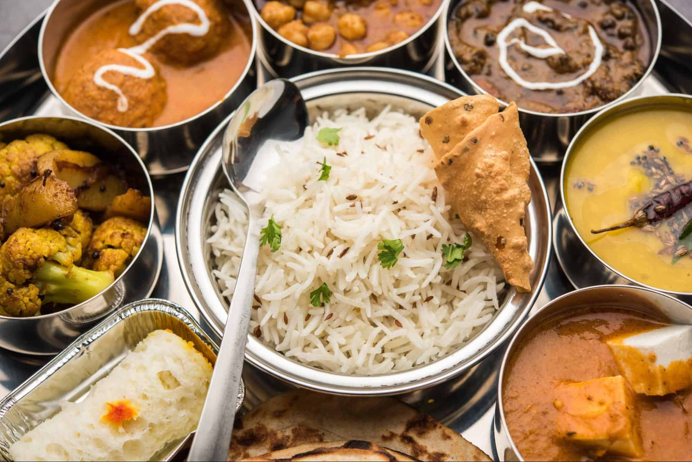

Tastes of Two Worlds: North and South India on a Plate
Indian food is different from rest of the world not only in taste but also in cooking methods. It reflects a
perfect blend of various cultures and ages. Just like Indian culture, food in India has also been influenced by
various civilizations, which have contributed their share in its overall development and the present form.
India has a rich culinary heritage. Indian cuisine has a 5000-year-old history. Mythological beliefs and
traditions have played an important role in its evolution and development. The main Indian food was based on
Hinduism but the Islamic influence during the Mughal era, the Persian exchanges with the Middle East and the
British colonial system have all contributed immensely towards laying the foundation of the Indian cuisine.
India is a big country with many states and regions. Each region offers a unique assortment of dishes and
cooking techniques. Each regional cuisine uses its own locally grown herbs, spices, fruits and vegetables. These
regional cuisines collectively combined together form the very delightful Indian Cuisine.
The staple Indian foods are Rice, Wheat and Lentils. And no Indian dish is complete without spices. Indian food
is a combination of all six tastes like sweet, sour, salty, bitter, spicy and astringent. In India different
dishes are prepared for different festivals. Every festival tends to be complete only when special food
associated with that festival is cooked on that day. Like Holi can not be complete without Gujhiya and Eid
without Sewai.
India is the only country in the world where there is Unity in Diversity not only its culture & religion but
also its cuisine.
Foods of India are better known for its spiciness. Throughout India, be it North India or South India, spices
are used generously in food. But one must not forget that every single spice used in Indian dishes carries some
or the other nutritional as well as medicinal properties.
North Indian Cuisine
North Indian States include: Punjab, Haryana, Rajasthan, Kashmir, Himachal Pradesh, Uttarakhand, Uttar
Pradesh, Bihar, Jharkhand, Chattisgarh and Madhya Pradesh.
North Indian cuisine contains a rich variety of breads like naan, chapatis and rotis which are made
primarily by using wheat as the chief ingredient. This leads us to the belief that North Indian food is
lighter as compared to South Indian cuisine. North Indian Cuisine is strongly influenced by the Mughal way
of cooking. These are techniques you will find in Kashmir, Hyderabad, and Central Asia. These are dishes
that were enjoyed by Nawabs several decades ago. These include rajma dal, lacha paratha, dal bati dum aloo,
palak paneer, and many more.
North Indian Ingredients
North Indian food more commonly uses meat and dairy as the centerpiece of their dishes rather than seafood
and vegetables of the South. The most frequently used meats are mutton and lamb, goat, and chicken. Beef
isn’t as common in India as some Hindus regard cows as sacred animals. Don’t be fooled; vegetables still
have their place in Northern cuisine; just different ones take prominence. Spinach, mustard greens,
radishes, and cauliflower are among some of the vegetables that can be found in everyday dishes.
Rather than using coconut milk, North Indian dishes are more often made using dairy cream and blended nuts.
The North’s winter can be pretty frigid, so nuts and thick creams are the perfect way to add comfort and
warmth to any dish.
Along with coconut milk being subbed out, South India’s spicier spices are replaced with North India’s more
milder ones like amchoor (dried mango powder) and dried fenugreek.
Once the meats, vegetables, spices, and sauces are selected, North Indians will often enjoy their meal with
a side of flatbread. Wheat grows in abundance in the Northern states, creating a more wheat-based than a
rice-based diet. Enjoy fresh naan, roti, chapati, and several bread variations, all derived from the wheat
grown right on the land.
The different crops and ingredients from each region allow the North and South to have their own specialty
dishes and appetizers.
North Indian Dishes
North Indian Appetizers and Sides
Naan is a traditional flatbread that resembles pita. Naan is made of wheat flour and
butter combined and leavened but can also be Tandoor-grilled or Tawa-fried. Naan can be served
beside curries and stews or slathered with various chutneys.
Samosas are fried or baked pastries that are filled with savory ingredients. Samosas
aren’t exclusive to North India and can be found in the local cuisines of South Asia, the Middle
East, Central Asia, East Africa, and other regions. Samosas can be filled with meat or
vegetarian options, and many include chutneys for extra moisture and flavor.
Seekh Kebabs are delicious kebabs that can be made of various ground meats but are more
commonly made with lamb. The ground mea is seasoned with garam masala, cumin seeds, fresh
ginger, cilantro, and other spices and mixed until thoroughly combined. Then, the meat is rolled
into a sausage-like shape and grilled to be served with raw red onion and mint-cilantro chutney.
North Indian Entrees

Aloo Gobi is made by frying potatoes, cauliflower, or both and adding it to gravy or curry. The dish is often yellow in color because of turmeric’s presence, but depending on what curry it’s placed in, it can take any color. Aloo gobi is a great vegetarian entree that’s delicious, hearty, and filling.
Chicken Tikka Masala is a bright and flavorful Indian dish that’s made its way across the globe. One bite of this smooth and velvety dish will remove all questions about why it’s grown so popular. Boneless pieces of chicken are marinated in yogurt and spices and then roasted. Once roasted, the chicken is placed in a rich and spicy gravy that can be placed over rice or served with naan.
Malai Kofta is a delicious and creamy Northern Indian dish that’s simple yet flavorful. The dish is made with fried balls of paneer, potato, and mixed vegetables served in a creamy gravy made of chopped tomatoes, onions, blended nuts, and of course, spices.
South Indian Cuisine
It is mostly believed that South Indian cuisine consists largely of vegetarian food but it is not entirely
true. Even though idlis and dosas dominate the South Indian food scenario, the cuisine also has abundant
non-vegetarian options despite being dominated by vegetarian food items. The main thing about South Indian
cuisine is that most things that it contains are made of rice. Apart from rice, key ingredients used in
South Indian Cuisine would be ginger, garlic, plantains, tamarind, native fruits coconut, and fresh green
chilies. These ingredients are famous for their flavor, and amazing health benefits.
If you look for non-vegetarian options in South Indian cuisine, you will find ample seafood. The Malabar
coast is famous for its variety of fish.
South Indian Ingredients
In South India, heavy rainfall and the Indian ocean allow beautiful fruits and vegetables to grow in abundance.
The coast offers delicious seafood, including sardines, Indian salmon, prawns, and tuna. With tons of fruits,
vegetables, and seafood to choose from, you’ll notice South Indian cuisines are more often vegetarian or
pescatarian-based. You can still find many meat dishes, but if you’re dining on the coast, we recommend you
indulge in the rich seafood that surrounds you.
As a cooking agent, tropical coconut milk is frequently used for making curries. When it comes to spices the
South is known for hotter spice mixes made with Huli Pudi (sambar powder), tamarind, cinnamon, mustard seed,
cardamom, nutmeg, clover, and dried curry leaves. Although the climate is already hot enough, South Indians use
spices with more heat because it helps induce sweat and help the body cool down.
All of the delicious seafood, fruits, vegetables, and spices of the South are typically served over rice Rice is
a significant component of the South Indian diet. Because seafood and fruit are so low in calories, rice is a
good energy source in the draining South Indian heat.
The foods and flavors produced by the South Indian climate define traditional South Indian cuisine. If you’re
not sure what exactly to order when traveling in the South, lean towards dishes that showcase fruits,
vegetables, and various fish; you’ll surely be pleased.
South Indian Dishes
South Indian Appetizers and Sides
Biryani is an aromatic mixed rice dish that’s made in several ways but often includes spices,
meat, eggs, yogurt, and vegetables. Biryani is also found in North India, but there are variations
specific to the South in cities like Hyderabad.
Coconut Chutney is another option for taming heat. Chutney is a condiment you can make with
pretty much any fruit or vegetable, but the South’s tropics grow large and flavorful coconuts that
make for a great chutney. Serve this chutney as an accompaniment to dosas, idlis, or a variety of
South Indian dishes.
Idli is one of the most popular breakfast sides enjoyed in the South. Idli are savory and
light steamed cakes made with a fermented rice and lentil batter. The cakes are fluffy yet filling
and can be served with any sambar or chutney you’d like.
South Indian Entrees
Masala Dosa and Appam are South Indian recipes that resemble pancakes or crepes.Masala
dosa is made using a batter of soaked rice and lentils and is typically topped with grated coconut
and chopped coriander. Appam is made from a batter of rice flour and coconut milk and is usually
bowl-shaped. Both pancake-like dishes are used to host various ingredients like potatoes,mustard
seeds, or fish; and can be eaten at any time of the day.
Sambar is a popular stew prepared with tamarind-based broth, turmeric powder, lentils, and
vegetables. The dish is traditionally served with steamed rice or lentil side dishes. Of course, not
all sambar recipes will taste the same, but most are spicy and tangy.
Lemon Rice is a South Indian staple that can be eaten on its own or laid as the foundation
for your proteins and sauces. As you can imagine, lemon rice is zesty and works perfectly for
bringing brightness to your plate.